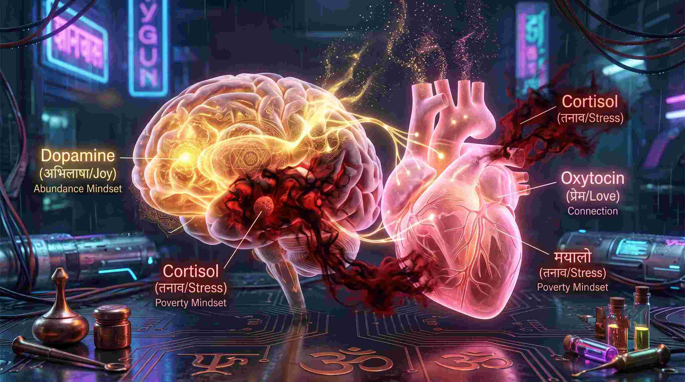
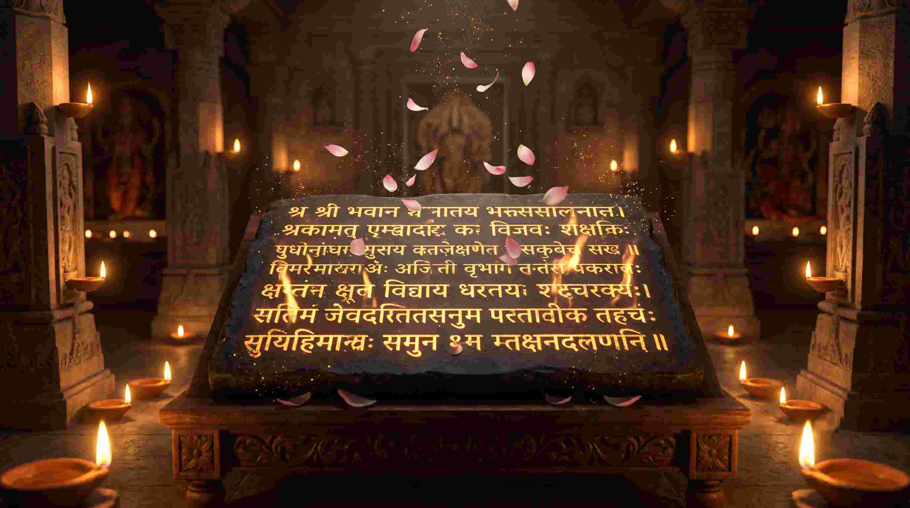
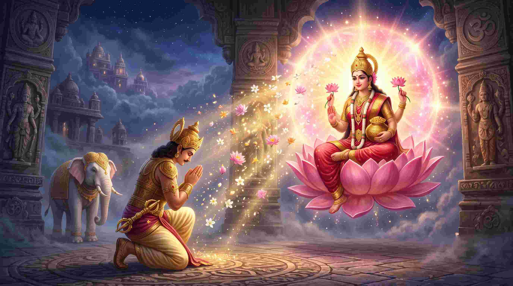

क्या आपने कभी यह सोचा है कि कुछ लोग लगातार तरक्की करते जाते हैं, जबकि कुछ लोग कितनी भी मेहनत कर लें, उनका बैंक अकाउंट हमेशा खाली रहता है? समाज इसे "किस्मत" कहता है। लेकिन एक मेडिकल छात्र और वैदिक ज्योतिषी होने के नाते, मैं इसे आपके मस्तिष्क की "फ्रीक्वेंसी" (Frequency) और "न्यूरो-वायरिंग" (Neural Wiring) का खेल मानता हूँ।
वैदिक ज्योतिष में शुक्र (Venus) और महालक्ष्मी को धन, विलासिता (Luxury) और आकर्षण (Attraction) का केंद्र माना गया है। जब आपके भीतर 'कॉर्टिसोल' (Stress Hormone) का स्तर अधिक होता है, तो आपका मस्तिष्क "दरिद्रता" (Scarcity Mindset / अलक्ष्मी) की फ्रीक्वेंसी पर काम करता है। महालक्ष्मी के स्तोत्रों (चालीसा, अष्टकम) का सस्वर पाठ कोई साधारण धार्मिक कर्मकांड नहीं है; यह आपके मस्तिष्क में डोपामाइन (Dopamine) और ऑक्सीटोसिन (Oxytocin) को बढ़ाकर आपको असीमित ब्रह्मांडीय ऊर्जा (Abundance) को आकर्षित करने वाला एक शक्तिशाली 'चुंबक' (Magnet) बना देता है।
"महालक्ष्मी बाहर कहीं सोने के सिक्कों के साथ नहीं बैठी हैं; महालक्ष्मी आपके अवचेतन मन (Subconscious mind) की वह परम अवस्था है जहाँ आपको यह पूर्ण विश्वास हो जाता है कि ब्रह्मांड में आपके लिए असीमित धन उपलब्ध है।"

1. श्री लक्ष्मी चालीसा: दरिद्रता के भय का मनोवैज्ञानिक इलाज
जब आप तनाव (Debt, Poverty) में होते हैं, तो आपके मस्तिष्क का 'फाइट और फ्लाइट' (Fight or Flight) मोड ऑन रहता है। लक्ष्मी चालीसा की चौपाइयां आपके पैरासिम्पेथेटिक नर्वस सिस्टम (Parasympathetic Nervous System) को शांत करती हैं। यह आपके भीतर 'स्वीकार्यता' (Receptivity) बढ़ाती है, जिससे आप धन कमाने के नए अवसरों को देख पाते हैं।
॥ दोहा ॥
मातु लक्ष्मी करि कृपा, करो हृदय में वास।
मनोकामना सिद्ध कर, पुरवहु मेरी आस॥
यही मोर अरदास, हाथ जोड़ विनती करूं।
सब विधि करौ सुवास, जय जननि जगदम्बिका॥
सिन्धु सुता मैं सुमिरौ तोही।
ज्ञान बुद्धि विद्या दो मोही॥
तुम समान नहिं कोई उपकारी।
सब विधि पुरवहु आस हमारी॥
जय जय जगत जननि जगदम्बा।
सबकी तुम ही हो अवलम्बा॥
तुम ही हो सब घट घट वासी।
विनती यही हमारी खासी॥
जग जननी जय सिन्धु कुमारी।
दीनन की तुम हो हितकारी॥
विनवौं नित्य तुमहिं महारानी।
कृपा करौ जग जननि भवानी॥
केहि विधि स्तुति करौं तिहारी।
सुधि लीजै अपराध बिसारी॥
कृपा दृष्टि चितवो मम ओरी।
जग जननी विनती सुन मोरी॥
ज्ञान बुद्धि जय सुख की दाता।
संकट हरो हमारी माता॥
क्षीरसिन्धु जब विष्णु मथायो।
चौदह रत्न सिन्धु में पायो॥
चौदह रत्न में तुम सुखरासी।
सेवा कियो प्रभु बनि दासी॥
जब जब जन्म जहां प्रभु लीन्हा।
रूप बदल तहं सेवा कीन्हा॥
स्वयं विष्णु जब नर तनु धारा।
लीन्हेउ अवधपुरी अवतारा॥
तब तुम प्रगट जनकपुर माहीं।
सेवा कियो हृदय पुलकाहीं॥
अपनाया तोहि अन्तर्यामी।
विश्व विदित त्रिभुवन की स्वामी॥
तुम सम प्राबल शक्ति नहीं आनी।
कहं लौ महिमा कहौं बखानी॥
मन क्रम वचन करै सेवकाई।
मन इच्छित वांछित फल पाई॥
तजि छल कपट और चतुराई।
पूजहिं विविध भांति मन लाई॥
और हाल मैं कहौं बुझाई।
जो यह पाठ करै मन लाई॥
ताको कोई कष्ट न होई।
मन इच्छित पावै फल सोई॥
त्राहि त्राहि जय दुःख निवारिणि।
त्रिविध ताप भव बंधन हारिणि॥
जो चालीसा पढ़ै पढ़ावै।
ध्यान लगाकर सुनै सुनावै॥
ताकौ कोई न रोग सतावै।
पुत्र आदि धन सम्पत्ति पावै॥
पुत्रहीन अरु सम्पत्ति हीना।
अन्ध बधिर कोढ़ी अति दीना॥
विप्र बुलाय कै पाठ करावै।
शंका दिल में कभी न लावै॥
पाठ करावै दिन चालीसा।
ता पर कृपा करैं गौरीसा॥
सुख सम्पत्ति बहुत सी पावै।
कमी नहीं काहू की आवै॥
बारह मास करै जो पूजा।
तेहि सम धन्य और नहिं दूजा॥
प्रतिदिन पाठ करै मन माहीं।
उन सम कोई जग में नाहीं॥
बहुविधि क्या मैं करौं बड़ाई।
लेय परीक्षा ध्यान लगाई॥
करि विश्वास करै व्रत नेमा।
होय सिद्ध उपजै उर प्रेमा॥
जय जय जय लक्ष्मी भवानी।
सब में व्यापित हो गुण खानी॥
तुम्हरो तेज प्रबल जग माहीं।
तुम सम कोउ दयालु कहूं नाहीं॥
मोहि अनाथ की सुधि अब लीजै।
संकट काटि भक्ति मोहि दीजै॥
भूल चूक करि क्षमा हमारी।
दर्शन दीजै दशा निहारी॥
बिन दर्शन व्याकुल अधिकारी।
तुमहि अछत दुःख सहते भारी॥
नहिं मोहिं ज्ञान बुद्धि है तन में।
सब जानत हो अपने मन में॥
रुप चतुर्भुज करके धारण।
कष्ट मोर अब करहु निवारण॥
केहि प्रकार मैं करौं बड़ाई।
ज्ञान बुद्धि मोहि नहिं अधिकाई॥
॥ दोहा ॥
त्राहि त्राहि दुख हारिणी, हरो बेगि सब त्रास।
जयति जयति जय लक्ष्मी, करो दुश्मन का नाश॥
रामदास धरि ध्यान नित, विनय करत कर जोर।
मातु लक्ष्मी दास पर, करहु कृपा की कोर॥

2. इन्द्र कृत महालक्ष्मी अष्टकम: असीमित ऐश्वर्य का वैदिक सूत्र
पद्म पुराण में वर्णित यह स्तोत्र स्वयं देवराज इन्द्र ने तब गाया था, जब महर्षि दुर्वासा के श्राप के कारण उनका संपूर्ण स्वर्ग और ऐश्वर्य छिन गया था। यह अष्टकम (8 श्लोकों का समूह) ब्रह्मांड की उस इलेक्ट्रोमैग्नेटिक 'रॉयल्टी' (Royalty) फ्रीक्वेंसी को टैप करता है, जो आपका खोया हुआ सम्मान, पैसा और पद (Position) वापस दिलाता है।
नमस्तेऽस्तु महामाये श्रीपीठे सुरपूजिते।
शङ्खचक्रगदाहस्ते महालक्ष्मि नमोऽस्तुते॥ १ ॥
अर्थ: हे महामाये! हे श्रीपीठ पर विराजमान और देवताओं द्वारा पूजित होने वाली देवी! जिनके हाथों में शंख, चक्र और गदा हैं, ऐसी हे महालक्ष्मी! आपको मेरा नमस्कार है।
विज्ञान: 'महामाये' का ध्यान आपके मस्तिष्क को भौतिक अभाव (Physical lack) के भ्रम (Illusion) से बाहर निकालता है।
नमस्ते गरुडारूढे कोलासुरभयङ्करि।
सर्वपापहरे देवि महालक्ष्मि नमोऽस्तुते॥ २ ॥
अर्थ: गरुड़ पर सवारी करने वाली और कोलासुर नामक असुर को भयभीत करने वाली देवी! सम्पूर्ण पापों को हरने वाली हे महालक्ष्मी! आपको मेरा नमस्कार है।
सर्वज्ञे सर्ववरदे सर्वदुष्टभयङ्करि।
सर्वदुःखहरे देवि महालक्ष्मि नमोऽस्तुते॥ ३ ॥
अर्थ: सब कुछ जानने वाली (सर्वज्ञे), सबको वरदान देने वाली और सभी दुष्टों को भयभीत करने वाली देवी! सम्पूर्ण दुखों को हरने वाली हे महालक्ष्मी! आपको मेरा नमस्कार है。
सिद्धिबुद्धिप्रदे देवि भुक्तिमुक्तिप्रदायिनि।
मन्त्रमूर्ते सदा देवि महालक्ष्मि नमोऽस्तुते॥ ४ ॥
अर्थ: सिद्धि और बुद्धि प्रदान करने वाली, तथा भोग (सांसारिक सुख) और मोक्ष दोनों देने वाली हे मंत्रमयी देवी! हे महालक्ष्मी! आपको सदा मेरा नमस्कार है।
विज्ञान: यह श्लोक 'सिद्धि' (Success) और 'बुद्धि' (Intellect) का संतुलन बनाता है। पैसा आने पर व्यक्ति अक्सर बुद्धि खो देता है, यह मंत्र उस न्यूरोलॉजिकल संतुलन को बनाए रखता है।
आद्यन्तरहिते देवि आद्यशक्तिमहेश्वरि।
योगजे योगसम्भूते महालक्ष्मि नमोऽस्तुते॥ ५ ॥
अर्थ: जिनका न आदि (शुरुआत) है और न अंत, ऐसी हे आद्यशक्ति महेश्वरी! योग से प्रकट होने वाली और योग से ही उत्पन्न होने वाली हे महालक्ष्मी! आपको नमस्कार है।
स्थूलसूक्ष्ममहारौद्रे महाशक्तिमहोदरे।
महापापहरे देवि महालक्ष्मि नमोऽस्तुते॥ ६ ॥
अर्थ: जो स्थूल (विशाल) और सूक्ष्म दोनों रूपों में हैं, जो महारौद्र, महाशक्ति और महोदर रूप वाली हैं। बड़े-बड़े पापों का नाश करने वाली हे महालक्ष्मी! आपको नमस्कार है।
पद्मासनस्थिते देवि परब्रह्मस्वरूपिणि।
परमेशि जगन्मातर्महालक्ष्मि नमोऽस्तुते॥ ७ ॥
अर्थ: कमल के आसन पर विराजमान होने वाली, परब्रह्म स्वरूपा हे देवी! हे परमेश्वरी! हे जगत की माता महालक्ष्मी! आपको नमस्कार है।
श्वेताम्बरधरे देवि नानालङ्कारभूषिते।
जगत्स्थिते जगन्मातर्महालक्ष्मि नमोऽस्तुते॥ ८ ॥
अर्थ: श्वेत (सफेद) वस्त्र धारण करने वाली और अनेक प्रकार के आभूषणों से सजी हुई हे देवी! सम्पूर्ण जगत में व्याप्त हे जगन्माता महालक्ष्मी! आपको नमस्कार है।
महालक्ष्म्यष्टकं स्तोत्रं यः पठेद्भक्तिमान्नरः।
सर्वसिद्धिमवाप्नोति राज्यं प्राप्नोति सर्वदा॥ ९ ॥
फलश्रुति: जो भी भक्तिमान मनुष्य इस महालक्ष्मी अष्टक स्तोत्र का पाठ करता है, वह सभी सिद्धियों को प्राप्त करता है और सदा के लिए राज्य (ऐश्वर्य) को प्राप्त करता है।
एककाले पठेन्नित्यं महापापविनाशनम्।
द्विकालं यः पठेन्नित्यं धनधान्यसमन्वितः॥ १० ॥
त्रिकालं यः पठेन्नित्यं महाशत्रुविनाशनम्।
महालक्ष्मिर्भवेन्नित्यं प्रसन्ना वरदा शुभा॥ ११ ॥
अर्थ: जो प्रतिदिन एक समय इसका पाठ करता है, उसके बड़े-बड़े पाप नष्ट हो जाते हैं। जो प्रतिदिन दो समय (सुबह-शाम) इसका पाठ करता है, वह धन-धान्य से परिपूर्ण हो जाता है। जो प्रतिदिन तीन समय पाठ करता है, उसके बड़े से बड़े शत्रुओं का नाश होता है और उस पर महालक्ष्मी नित्य प्रसन्न होकर शुभ वरदान देती हैं।

3. लक्ष्मी बीजाक्षर मंत्र: 'वेगस नर्व' का शक्तिशाली एक्टिवेटर
वैदिक ध्वनियों में "श्रीं" (Shreem) लक्ष्मी का बीज मंत्र है। जब आप "ॐ श्रीं ह्रीं श्रीं कमले कमलालये प्रसीद प्रसीद श्रीं ह्रीं श्रीं ॐ महालक्ष्म्यै नमः॥" का जाप करते हैं, तो 'श्रीं' की ध्वनि (Sound vibration) आपकी 'वेगस नर्व' (Vagus Nerve) में एक गुंजन पैदा करती है। यह गुंजन आपके हृदय चक्र (Heart Chakra) को खोलता है और आपके 'गट-ब्रेन एक्सिस' (Gut-Brain Axis) को आराम देता है। शरीर से स्ट्रेस हार्मोन बाहर निकलते हैं और आप पैसे कमाने के लिए सबसे 'शांत और फोकस्ड' निर्णय ले पाते हैं।
4. वैभव प्राप्ति के लिए 40-दिन का 'महालक्ष्मी अनुष्ठान' (Action Plan)
यदि आप लगातार आर्थिक तंगी (Financial Crisis), कर्ज, या व्यापार में घाटे से जूझ रहे हैं, तो केवल प्रार्थना न करें; एक वैज्ञानिक 'न्यूरो-प्रोग्रामिंग' अनुष्ठान शुरू करें:
- शुक्रवार से शुरुआत: इस अनुष्ठान को शुक्ल पक्ष के शुक्रवार (Friday) से शुरू करें। शुक्रवार 'शुक्र' (Venus) का दिन है, जो विलासिता (Luxury) का ग्रह है।
- आसन और दिशा: गुलाबी या लाल रंग के आसन पर उत्तर (North - कुबेर की दिशा) की ओर मुख करके बैठें।
- दीपक (Lamp): गाय के शुद्ध घी का दीपक प्रज्वलित करें। घी का दीपक वातावरण में सकारात्मक 'आयन्स' (Positive Ions) छोड़ता है।
- पाठ की विधि: सबसे पहले 1 बार महालक्ष्मी अष्टकम पढ़ें, उसके बाद 1 बार लक्ष्मी चालीसा का सस्वर पाठ करें। अंत में 'कमलगट्टे' (Lotus Seeds) की माला से 108 बार "ॐ श्रीं ह्रीं श्रीं..." बीज मंत्र का जाप करें।
- सुगंध (Fragrance): गुलाब (Rose) या इत्र (Attar) का प्रयोग करें। सुगंध सीधे आपके 'ओल्फेक्ट्री नर्व' (Olfactory nerve) के माध्यम से 'लिम्बिक सिस्टम' (Limbic system - भावनाओं का केंद्र) को हिट करती है और 'रॉयल्टी' का अहसास कराती है।
निष्कर्ष: अपनी "मानसिक दरिद्रता" को नष्ट करें
ब्रह्मांड में धन की कोई कमी नहीं है; कमी सिर्फ हमारी उस 'रिसीविंग कैपेसिटी' (Receiving Capacity) में है, जिसे हमारे खुद के डर और तनाव ने ब्लॉक कर रखा है। महालक्ष्मी भक्ति कोई जादू का चिराग नहीं है कि आसमान से पैसे गिरेंगे। यह आपके मस्तिष्क के हार्डवेयर को साफ करने का एक प्राचीन 'सॉफ्टवेयर अपडेट' है।
जब आप लक्ष्मी चालीसा और अष्टकम का पूर्ण विश्वास के साथ पाठ करते हैं, तो आपका अवचेतन मन (Subconscious mind) यह मान लेता है कि आप असीमित धन के अधिकारी हैं। और जब आपका दिमाग इस बात पर यकीन कर लेता है, तो ब्रह्मांड आपको वह धन देने के लिए मजबूर हो जाता है। आज ही से इस 'वैभव विज्ञान' को अपने जीवन में उतारें! "ॐ श्री महालक्ष्म्यै नमः"